\begin{document}
Use to install the latest version of the package.
In this vignette we’ll also use some other packages:
To run simulations, a few parameter values must be specified. Set these by editing the example params file, which is converted to a object by . In the example, the time unit is assumed to be days.
The term in acute care'' meansin hospital but not in the intensive care unit (ICU)’’.
params1 <- read_params("ICU1.csv")(by default looks first in the working directory for CSV files, then in the directory installed with the package (). All the built-in parameter files can be found as follows:
folder <- system.file("params", package="McMasterPandemic")
list.files(folder)
#> [1] "CI_base.csv" "CI_updApr1.csv"
#> [3] "ICU_diffs.csv" "ICU1.csv"
#> [5] "midas_estimates.csv" "midas_estimates_ali.csv"
#> [7] "PHAC.csv" "PHAC_testify.csv"
#> [9] "stanford_estimates.csv"If you want to edit one of these files, you need to copy it to your working directory first. To find the full path to , for example, use:
system.file("params/ICU1.csv", package="McMasterPandemic")
#> [1] "C:/Users/somat/AppData/Local/Temp/RtmpQFZbMs/temp_libpathd10285647a3/McMasterPandemic/params/ICU1.csv"If is a parameter set (e.g., the result of ), then or, equivalently, will return a data frame with a column giving the meaning of each parameter.
knitr::kable(describe_params(params1))| symbol | value | meaning |
|---|---|---|
| beta0 | 1 | Baseline (non-intervention) transmission across categories |
| Ca | 0.667 | relative asymptomatic transmission (or contact) |
| Cp | 1 | relative presymptomatic transmission (or contact) |
| Cm | 1 | relative mildly symptomatic transmission (or contact) |
| Cs | 1 | relative severely symptomatic transmission (or contact) |
| alpha | 0.333 | Fraction of cases asymptomatic |
| sigma | 0.192 | 1/time in exposed class |
| gamma_a | 0.143 | 1/time for asymptomatic recovery |
| gamma_m | 0.143 | 1/time for mildly symptomatic recovery |
| gamma_s | 0.175 | 1/time for severely symptomatic transition to hospital/death |
| gamma_p | 2 | 1/time in pre-symptomatic class |
| rho | 0.1 | 1/time in hospital (acute care) |
| delta | 0 | Fraction of acute-care cases that are fatal |
| mu | 0.956 | Fraction of symptomatic cases that are mild (or moderate) |
| N | 1e+06 | Population size |
| E0 | 5 | Initial number exposed |
| nonhosp_mort | 0 | probability of mortality without hospitalization |
| iso_m | 0 | Relative self-isolation/distancing of mild cases |
| iso_s | 0 | Relative self-isolation/distancing of severe cases |
| phi1 | 0.76 | Fraction of hospital cases to acute care |
| phi2 | 0.5 | Fraction of ICU cases dying |
| psi1 | 0.05 | Rate of ICU back to acute care |
| psi2 | 0.125 | Rate of ICU to death |
| psi3 | 0.2 | Rate of post-ICU to discharge |
| c_prop | 0.1 | fraction of incidence reported as positive tests |
| c_delay_mean | 11 | average delay between incidence and test report |
| c_delay_cv | 0.25 | coefficient of variation of testing delay |
| proc_disp | 0 | dispersion parameter for process error (0=demog stoch only) |
| zeta | 0 | phenomenological heterogeneity parameter |
The method for objects returns the initial exponential growth rate (\(r_0\)), the doubling time (\(\log{2}/r_0\)), the mean generation interval (\(\overline{G}\)), and the basic reproduction number
%% \[\begin{equation*} \R_0 = \beta_0 \left\{ \alpha \frac{C_{\rm a}}{\gamma_{\rm a}} + (1-\alpha)\left[ \frac{C_{\rm p}}{\gamma_{\rm p}} + \mu(1-\texttt{iso}_{\rm m})\frac{C_{\rm m}}{\gamma_{\rm m}} + (1-\mu)(1-\texttt{iso}_{\rm s})\frac{C_{\rm s}}{\gamma_{\rm s}} \right] \right\} \,. \end{equation*}\]
| r0 | R0 | Gbar | CFR_gen | dbl_time |
|---|---|---|---|---|
| 0.23 | 6.52 | 12.19 | 0.04 | 3.04 |
The components of \(\R_0\) (the reproduction number associated with each infectious compartment) can also be extracted.
| asymptomatic | pre-symptomatic | mild | severe |
|---|---|---|---|
| 1.56 | 0.33 | 4.46 | 0.17 |
The initial state must also be set, but it is sufficient to specify the parameter set (a object), in which case the population size and initially exposed population will be taken from the parameters (in this case all non-exposed individuals are assumed to be susceptible).
state1 <- make_state(params=params1)Dates on which the simulation starts and ends must be stated. If there are no observations that you are aiming to match, then these dates are arbitrary and only the length of time matters.
sdate <- "2020-02-10"
edate <- "2020-06-01"A simple deterministic simulation is run as follows, and returns a object. The method computes the times and magnitudes of peak demands on acute care (H) and intenstive care (ICU), and the basic reproduction number \(\R_0\).
res1 <- run_sim(params=params1, state=state1, start_date=sdate, end_date=edate)
summary(res1)
#> peak_ICU_date peak_ICU_val peak_H_date peak_H_val R0
#> 1 2020-04-19 2787 2020-04-18 8094 6.518009The method for objects returns a object, optionally on a log scale.
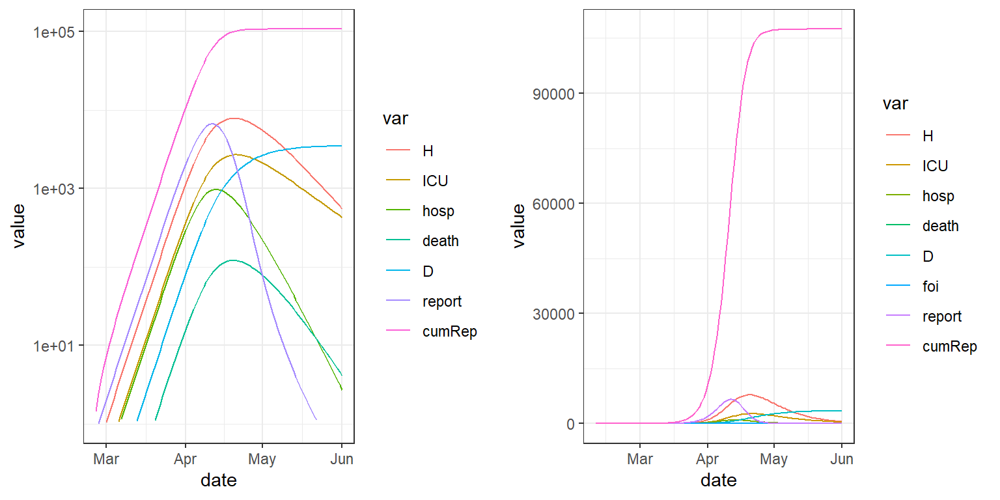
The effects of observation error are easy to explore with the argument to . The parameter is the dispersion parameter for a (if the mean and variance are \(\mu\) and \(\sigma^2\), respectively, then \(\sigma^2=\mu + \frac{\mu^2}{\text{obs_disp}}\)).
set.seed(101)
params1obs <- update(params1, obs_disp=200)
res1obs <- run_sim(params1obs, state1, start_date=sdate, end_date=edate,
stoch=c(obs=TRUE, proc=FALSE))
summary(res1obs)
#> peak_ICU_date peak_ICU_val peak_H_date peak_H_val R0
#> 1 2020-04-19 2840 2020-04-18 8701 6.518009
plot_grid(plot(res1obs, log=TRUE),
plot(res1obs))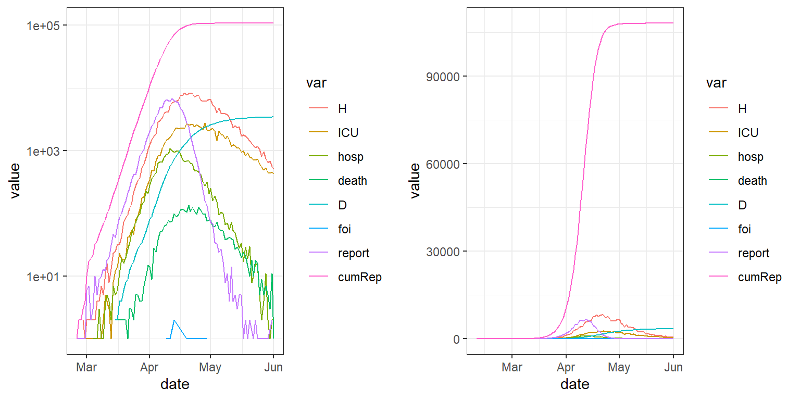
To simulate with process error, use . By default, this simulates only demographic stochasticity, which has little effect in a large epidemic.
params1proc <- update(params1,E0=200,proc_disp=0) ## demog stoch only
res1proc <- run_sim(params1proc, start_date=sdate, end_date=edate,
stoch=c(obs=FALSE, proc=TRUE))Making positive simulates with additional process noise:
params1proc2 <- update(params1,E0=200, proc_disp=0.5, obs_disp=5)
res1proc2 <- run_sim(params1proc2, start_date=sdate, end_date=edate,
stoch=c(obs=FALSE, proc=TRUE))
plot_grid(plot(res1proc2, log=TRUE), plot(res1proc2))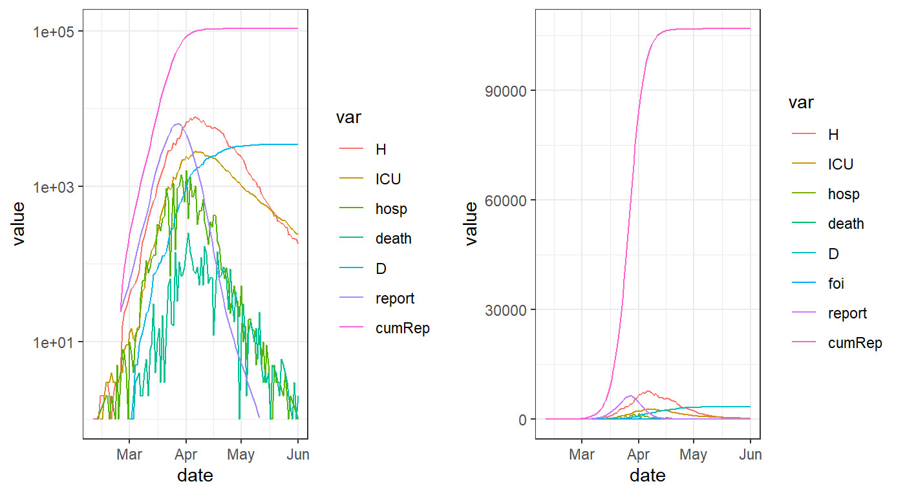
Demographic noise is included by calculating probabilities from the rates and then drawing a multinomial sample to determine how many individuals move from one compartment to each of the others. With pure demographic noise, the CV is very small with only \(\sim1000\) individuals moving among compartments. Process dispersion (; overdispersed demographic stochasticity'') is implemented using \code{pomp::reulermultinom}, which adds gamma white noise to the event rates. For some discussion of this, see p.\,274 and Appendix~A of theplug-and-play’’ paper by He et al. (2010, {}, 271–283, doi:\texttt{10.1098/rsif.2009.0151}.
Implementing known changes in transmission rate (e.g., resulting from social distancing measures) is straighforward via the argument. The following reduces \(\beta_0\) (and hence \(\R_0\)) to 50% of its original value on 10 March 2020, and to 10% of its original value on 25 March 2020.
Setting forces 20 intermediate time steps to occur between each saved step. (Try it with to see why this is a good idea.)
Setting retains all variables in the output, rather than collapsing into a single \(I\) class etc.
time_pars <- data.frame(Date=c("2020-03-10","2020-03-25"),
Symbol=c("beta0","beta0"),
Relative_value=c(0.5,0.1))
restimedep <- run_sim(params1,state1,start_date=sdate,end_date=edate,
params_timevar=time_pars,ndt=20, condense=FALSE)
summary(restimedep)
#> peak_ICU_date peak_ICU_val peak_H_date peak_H_val R0
#> 1 2020-04-10 415 2020-04-08 1175 6.518009
plot_grid(plot(restimedep, log=TRUE, condense=FALSE),
plot(restimedep, condense=FALSE))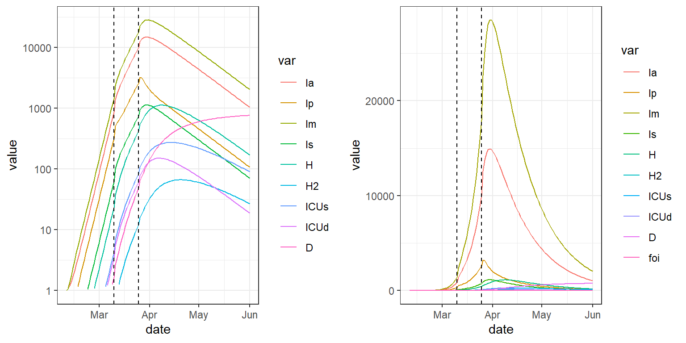
Some parameters you might wish to change are not directly available in the parameter file. Instead, you can adjust them using . For example, if you would like to change the default value of \(\R_0\) implied in the parameter list you can do the following.
In a typical epidemic forecasting application, we have imperfect information about the parameters and a time series of reported events (e.g., cases, hospitalizations, deaths, etc.). Our goal is to predict the future course of the outbreak, and to determine how it will differ under various intervention scenarios.
The natural approach is to find a set of parameters that lies within the estimated constraints and best fits the observed part of the epidemic. This is referred to as ``calibrating’’ the model to the data.
Unsurprisingly, there is a function for doing just this.
Imagine that the simulated data saved in were the observed data to which want to fit the model. We can calibrate to these data as follows.
Note that requires the data come in long form'', which means that for each date on which we have data, there are separate rows for each type of data (report, death, hospitalization, *etc*). This is in contrast towide form’’, for which there is one row for each date, and separate columns for each observed variable.
library(dplyr)
## pull out only the reported cases and convert to long form:
report_data <- (res1obs
%>% mutate(value=round(report), var="report")
%>% select(date, value, var)
%>% na.omit()
)
head(report_data)
#> date value var
#> 16 2020-02-25 1 report
#> 17 2020-02-26 3 report
#> 18 2020-02-27 1 report
#> 19 2020-02-28 1 report
#> 20 2020-02-29 2 report
#> 21 2020-03-01 2 report
## beta0 is the only parameter we're going to optimize:
opt_pars <- list(params = c(beta0=0.1))
## fit beta0 based on the report data:
fitted.mod <- calibrate(
data = report_data
, start_date = sdate
## skip breaks that are present by default:
, time_args = list(break_dates = NULL)
, base_params = params1obs
, opt_pars = opt_pars
##, debug_plot = TRUE # instructive plotting during optimization
)
## plot the resulting fit
plot(fitted.mod, data=report_data)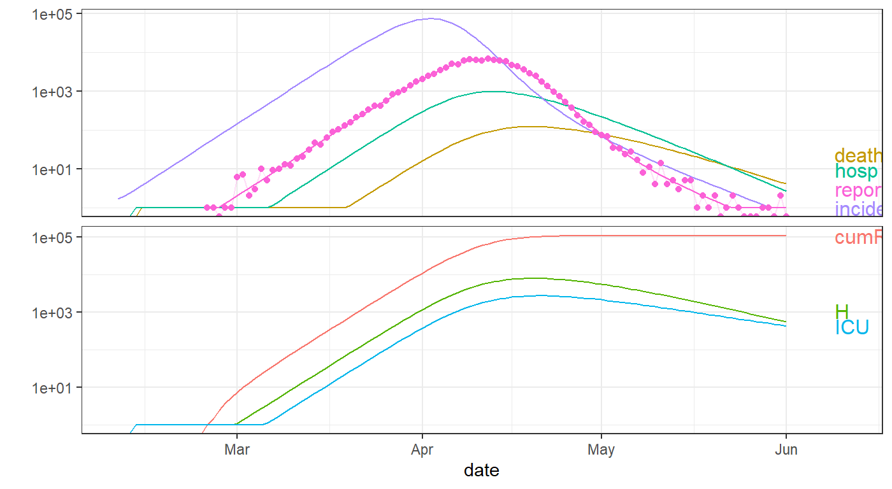
## spit out fitted parameters (in this case, just beta0)
coef(fitted.mod, "fitted")
#> $params
#> beta0
#> 0.999375That worked well, given that the value of used for the simulation was 1. You might want to try running the above interactive without commenting out ``’’. This will allow you to see the process of fitting the model to the data. Note, however, that this instructive visualization of the optimization process will slow down the optimization by an order of magnitude.
Let’s now now try to fit the model to both reports and deaths. It is easiest to create the required long-form data frame using the function in the package.
library(tidyr)
report_death_data <- (res1obs
%>% select(date, report, death)
%>% pivot_longer(names_to = "var", -date)
%>% mutate(value=round(value))
%>% na.omit()
)
head(report_death_data, n=12)
#> # A tibble: 12 x 3
#> date var value
#> <date> <chr> <dbl>
#> 1 2020-02-11 death 0
#> 2 2020-02-12 death 0
#> 3 2020-02-13 death 0
#> 4 2020-02-14 death 0
#> 5 2020-02-15 death 0
#> 6 2020-02-16 death 0
#> 7 2020-02-17 death 0
#> 8 2020-02-18 death 0
#> 9 2020-02-19 death 0
#> 10 2020-02-20 death 0
#> 11 2020-02-21 death 0
#> 12 2020-02-22 death 0Now let’s fit to both reports and deaths.
## beta0 is the only parameter we're going to optimize:
opt_pars <- list(params = c(beta0=0.1))
fitted.mod <- calibrate(
data = report_death_data
, start_date = sdate
## skip breaks that are present by default:
, time_args = list(break_dates = NULL)
, base_params = params1obs
, opt_pars = opt_pars
##, debug_plot = TRUE # instructive plotting during optimization
)
plot(fitted.mod, data=report_death_data)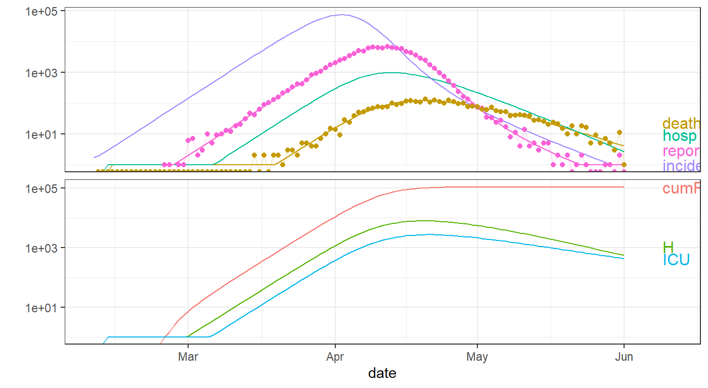 If you wish, you can plot just the data being fitted, and the fitted model, via:
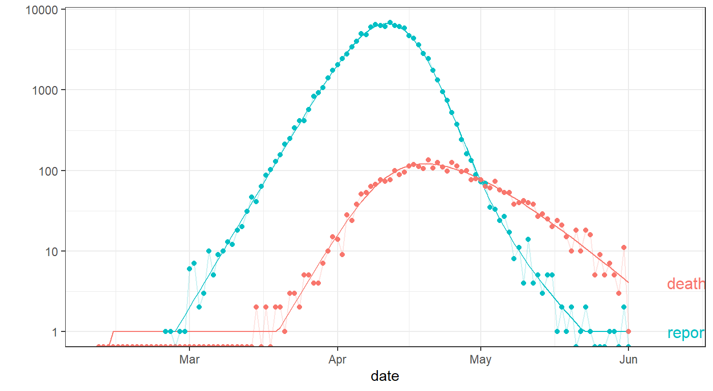 That fit looks remarkably good. Let’s see how good:
coef(fitted.mod, "fitted") # spit out fitted parameters
#> $params
#> beta0
#> 1
summary(coef(fitted.mod))
#> r0 R0 Gbar CFR_gen dbl_time
#> 0.2278149 6.5180089 12.1897402 0.0352000 3.0425898Amazing: our fitted is exactly the value used in the simulation that generated the data. Note that in the summary at the end, refers to the initial exponential growth rate from the fitted model. This provides an alternative to the package for fitting epidemic growth rates.
Finally, consider the case where we have both observation and process noise. Fitting to these data won’t do as well, because does not have a way of fitting to process noise. Consequently, the quality of our fit can be expected to be worse. Of course, real data always contain process noise
report_data <- (res1proc2
%>% mutate(value=round(report), var="report")
%>% select(date, value, var)
%>% na.omit()
)
## beta0 is the only parameter we're going to optimize:
opt_pars <- list(params = c(beta0=0.1))
fitted.mod <- calibrate(
data = report_data
, start_date = sdate
## skip breaks that are present by default:
, time_args = list(break_dates = NULL)
, base_params = params1proc2
, opt_pars = opt_pars
##, debug_plot = TRUE # instructive plotting during optimization
)
plot(fitted.mod, data=report_data)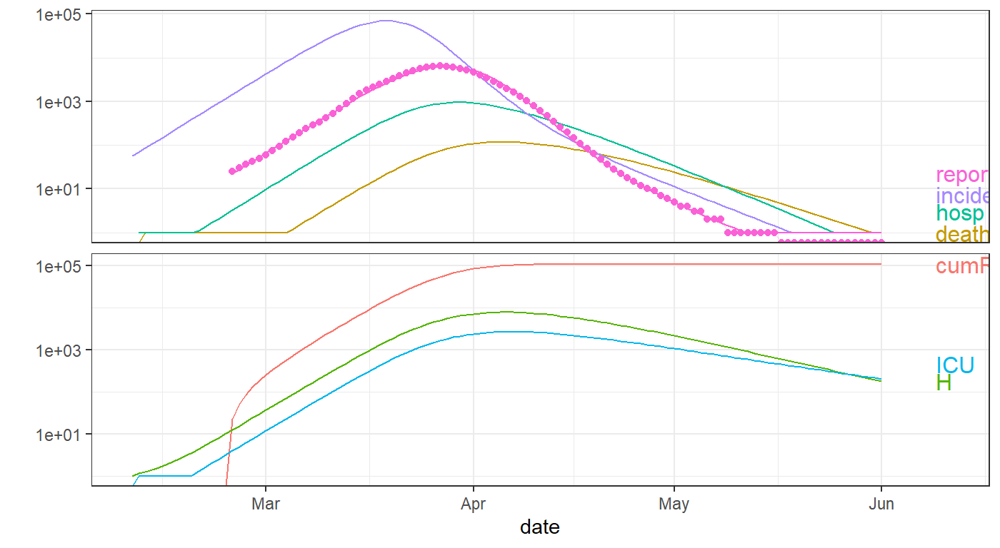
coef(fitted.mod, "fitted") # spit out fitted parameters
#> $params
#> beta0
#> 0.90125
summary(coef(fitted.mod,"all"))
#> r0 R0 Gbar CFR_gen dbl_time
#> 0.2106971 5.8743555 12.1897402 0.0352000 3.2897798As above, you can plot just the data being fitted, and the fitted model, via:
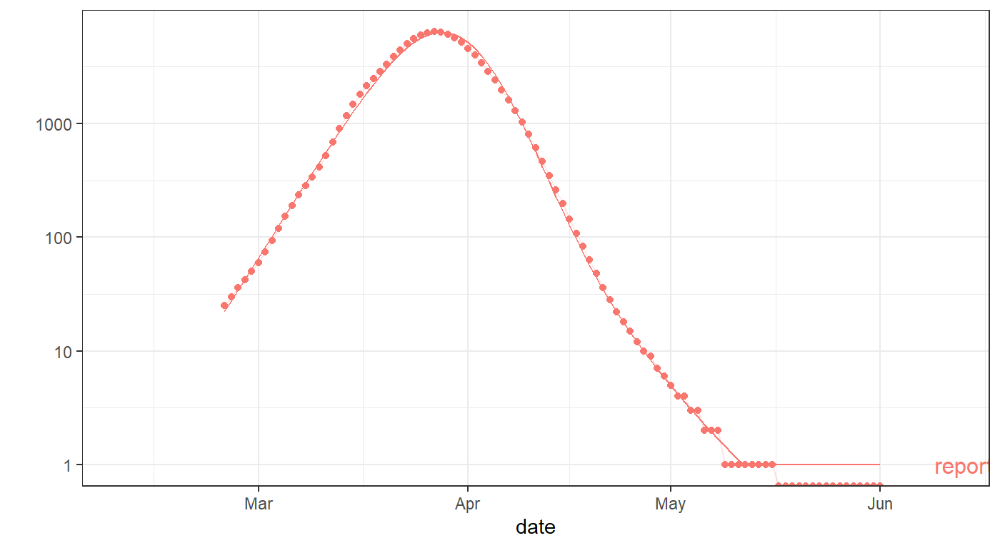
Typically, after calibrating to observed data, you are likely to be interested in forecasting what might happen in the future, under various scenarios of possible changes in control measures/policies. Here, we give an example involving changing the transmission rate (\(\beta\)) in the future.
First we load some data manipulation packages for convenience.
Now we modify the example (). We first check that setting and using non- yield the same results.
params <- read_params("ICU1.csv")
pp <- fix_pars(params, target = c(R0 = 1.3, Gbar=6))
state <- make_state(params=pp)
startdate <- as.Date("2020-01-01")
enddate <- as.Date("2020-10-01")This is checking if we can get the same thing if we don’t add stoch:
sim0 <- run_sim(pp,state,start_date=startdate,end_date=enddate)
gg0 <- (ggplot(sim0,aes(x=date))
+ geom_point(aes(y=incidence))
)
print(gg0)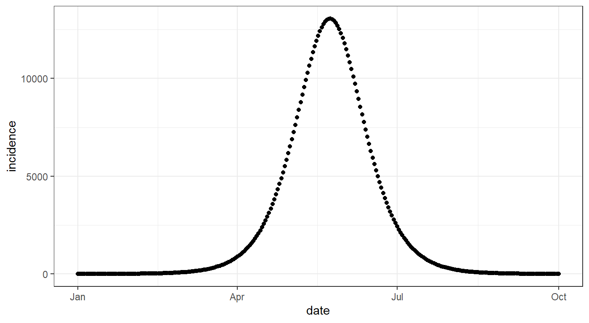 We want a dataframe that includes the time varying relative \(\beta\) at each saved time point. If relative \(\beta\) is constant though time, it should give back the same trajectory.
time_pars <- data.frame(Date=as.Date(startdate:enddate)
, Symbol="beta0"
, Relative_value=1
)
# , stringsAsFactors=FALSE)This fits a dataframe where :
sim0_t <- update(sim0, params_timevar=time_pars)
print(gg0
+ geom_point(data=sim0_t, aes(x=date,y=incidence), color="red")
)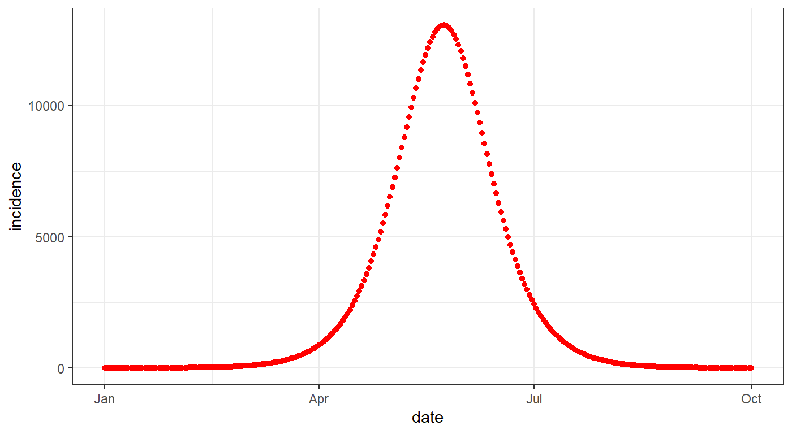 Now, as an example, we set relative \(\beta\) to drop by a factor of 2 (linearly) between 1 July 2020 and 1 Oct 2020.
lockdown <- as.Date("2020-07-01")
time_pars2 <-
data.frame(Date=as.Date(startdate:enddate)
, Symbol="beta0"
, Relative_value =
c(rep(1, length(startdate:lockdown)-1)
, seq(1,0.5,length.out = length(lockdown:enddate))
)
)
##print(time_pars2)
head(time_pars2)
#> Date Symbol Relative_value
#> 1 2020-01-01 beta0 1
#> 2 2020-01-02 beta0 1
#> 3 2020-01-03 beta0 1
#> 4 2020-01-04 beta0 1
#> 5 2020-01-05 beta0 1
#> 6 2020-01-06 beta0 1
sim0_t_reduce <- update(sim0, params_timevar=time_pars2)
gg_rel_beta <- (ggplot(time_pars, aes(x=Date))
+ geom_point(aes(y=Relative_value))
+ geom_point(data=time_pars2, aes(x=Date, y=Relative_value), color="red")
)We can now look at the relative value of \(\beta\) in each scenario, and the corresponding forecasted epidemic curves.
print(gg_rel_beta)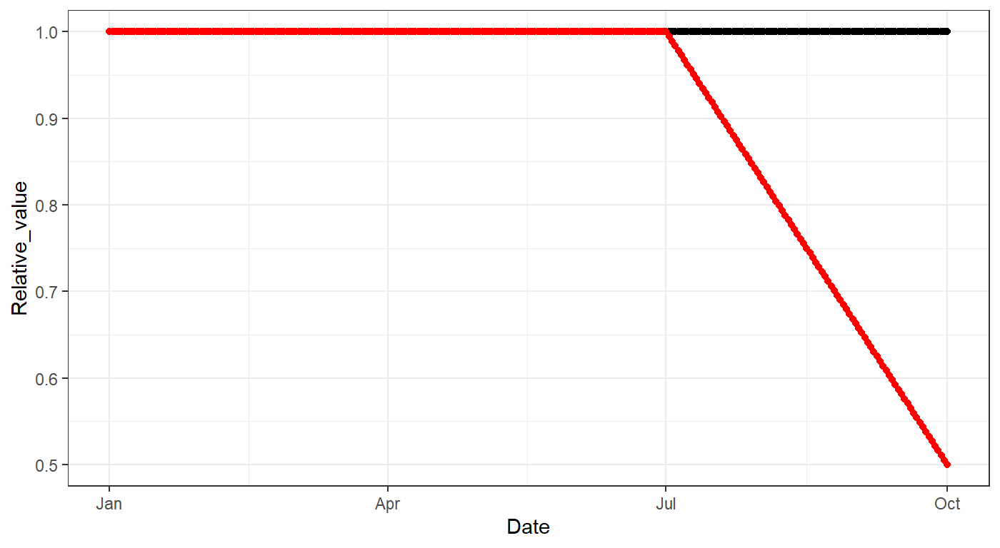
print(gg0
+ geom_point(data=sim0_t_reduce, aes(x=date,y=incidence), color="red")
)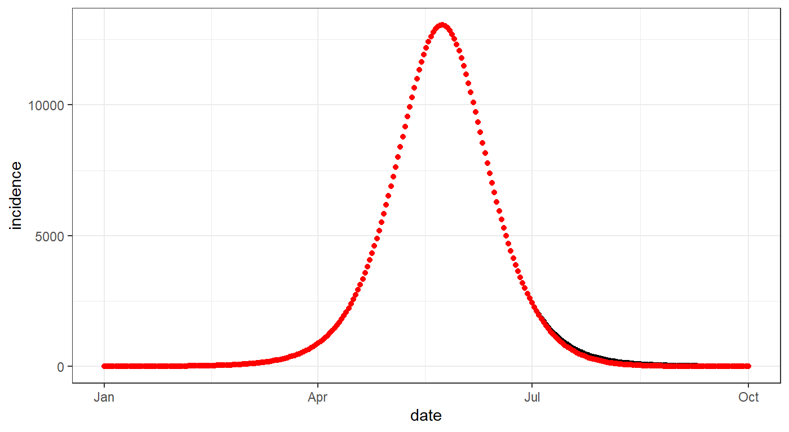
\end{document}